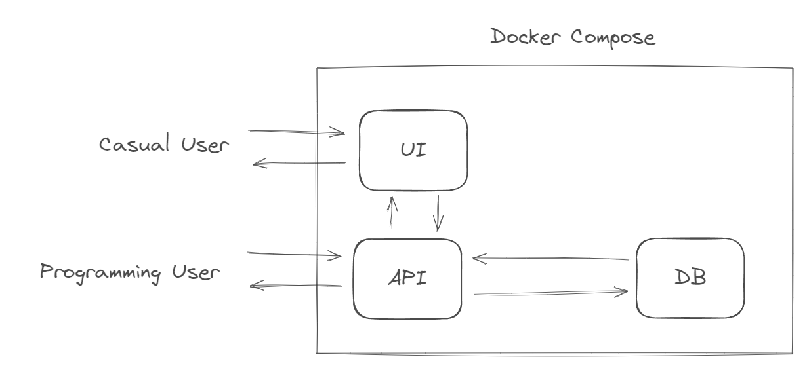

TP0: Tooling
Resumen
El TP0 apunta a familiarizarse con herramientas que utilizaremos durante el curso y, si bien no son precisamente de aprendizaje profundo, si son prácticas usuales del campo del desarrollo de software y permiten aspectos como el versionado, la comunicación, en encapsulamiento, entre otros.
Encontrará los ejercicios con diferentes marcas:
- ★: Ejercicio Obligatorio - no tenés opción.
- ★★: Ejercicio recomendado - hacelo, que no te gane la timidez.
- ★★★: Ejercicio avanzado - preguntate dos veces si querés entrar en el rabbit hole.
- ★★★★: Ejercicio de integración - if you gaze long into an abyss, the abyss also gazes into you.
Completar este TP en su totalidad es una tarea sumamente extensa, por lo que se recomienda al lector tratar al mismo como un “repositorio de ideas”—a excepción de los ejercicios obligatorios—es decir, un lugar a dónde haya una referencia de un seleccionado de cosas que le pueden ser de utilidad para construir sistemas de información.
Nota: Parte de esta práctica fue escrita con auxilio de algún LLM - so you may find some weird wording here and there.
IDE ★
Visual Studio Code (VSCode)
Un Entorno de Desarrollo Integrado (IDE) es una herramienta esencial para cualquier programador. Facilita la tarea de escribir y depurar código, ofreciendo funcionalidades como resaltado de sintaxis, autocompletado, gestión de versiones, entre otras. En este curso, recomendamos en Visual Studio Code (VSCode), uno de los IDEs más populares y versátiles.
Instrucciones:
- Descarga e Instalación:
- Visita la página oficial de Visual Studio Code: https://code.visualstudio.com/
- Selecciona la versión adecuada para tu sistema operativo (Windows, MacOS, Linux) y descárgala.
- Sigue las instrucciones de instalación proporcionadas en la página o por el instalador.
Git ★
Git es una herramienta de control de versiones esencial para cualquier desarrollador. ¿Por qué? Porque te permite tener un registro detallado y organizado de todos los cambios que hacés en tu código. Imaginate que es como un gran libro de historia, donde cada cambio que hacés en tu proyecto queda anotado, y podés volver atrás en el tiempo si algo no anda bien.
Pero Git no es solo un guardián del pasado; también es fundamental para trabajar en equipo. Permite que varias personas colaboren en el mismo proyecto sin pisarse los talones. Cada uno puede trabajar en su rama, hacer cambios, y después juntar todo sin tantos dramas.
Durante el curso, vamos a meterle mano a Git de a poco. Vamos a empezar con lo básico: crear repositorios, hacer commits, manejar branches, y entender cómo funciona el asunto de los merge. Después, vamos a explorar características más avanzadas y aprender a resolver conflictos, que siempre aparecen cuando menos los esperás.
Además, vamos a usar GitHub, que es como el barrio de Git en internet. Ahí vamos a compartir nuestros códigos, colaborar en proyectos y, sobre todo, aprender a mover el ambo en este mundo del desarrollo colaborativo.
Por último, a lo largo del curso vamos a usar una herramienta que se llama GitHub Classroom. Ahí mismo vamos a poder hacer correcciones (con la metodología usual de correcciones de Git - Pull Requests) y, además de eso, se van a correr automágicamente suites de tests que les van a servir de feedback instantáneo para saber si el código que están haciendo está correcto (da lo que debería dar) o no.
Ejercicios
- (★) GitHub Account:
- Crear un Repositorio en GitHub:
- (Crea y) Inicia sesión en tu cuenta de GitHub.
- Si no lo tenés, instala
giten tu computadora. - Crea un nuevo repositorio en tu cuenta de GitHub. Dale un nombre como
tp0-test. - Marca la opción de inicializar el repositorio con un archivo README.
- Clonar el Repositorio:
- Utiliza el comando
git cloneseguido de la URL de tu repositorio para clonarlo en tu equipo local.
- Utiliza el comando
- Crear y Usar una Branch:
- Crea una nueva branch en tu repositorio local, por ejemplo,
feature-branch. - Cambia a esta branch con
git checkout feature-branch. Se pueden hacer ambos pasos al mismo tiempo congit checkout -b feature-branch - Escribe un archivo README.md con tu nombre, tu carrera y un fun fact tuyo. Guarda este archivo en tu repositorio local.
- Crea una nueva branch en tu repositorio local, por ejemplo,
- Pushear Cambios y Crear un Pull Request (PR):
- Pushea tus cambios a GitHub con
git push. - Ve a tu repositorio en GitHub y crea un PR desde tu nueva branch hacia la branch principal (
mainomaster).
- Pushea tus cambios a GitHub con
- Mergear el Pull Request:
- Completa el proceso de revisión de código (si es aplicable) y mergea el PR.
- Crear un Repositorio en GitHub:
- (★) GitHub Classroom
- Acceso a GitHub Classroom:
- Utiliza el enlace proporcionado por la cátedra para acceder al GitHub Classroom de tu curso (https://classroom.github.com/a/KpD5PDYo). Esto va a generar un nuevo repositorio para tu cuenta.
- En el nuevo repositorio creado en tu cuenta encontrarás en su interior algunas carpetas asociadas a este trabajo práctico.
- Completar el Assignment:
- Creá un archivo que se llame “fun_fact.txt”, con algún fun fact tuyo en su interior.
- Pusheá los cambios al repositorio.
- Esto va a crear automágicamente un PR que se llama “Feedback”, a donde vamos a poder interactuar para chequear que el código escrito esté correcto.
- Uso del Autograding:
- Revisá el Autograding (ver aquí como) para ver que el test (Ejercicio 2) pase correctamente.
- Acceso a GitHub Classroom:
- (★★) GitFlow
- Crear y Usar Branches de Desarrollo y Features:
- Crea una branch
mainy haz algunos cambios en ella. - Luego, crea dos branches de características,
F1yF2, basándote enmain. Hacé cambios en archivos similares en ambas branches - por ejemplo, en el fun_fact.txt que mencionamos anteriormente. Intentá cambiar un fun fact por un unfun-fact en una branch, y por otro weird_fact en la otra.
- Crea una branch
- Mergear Branches y Resolver Conflictos:
- Mergear
F1conmain. - Intentá mergear
F2conmainy maneja los conflictos que surjan.
- Mergear
- Crear y Usar Branches de Desarrollo y Features:
Python ★
Python es un lenguaje de programación de alto nivel. Se ha convertido en uno de los lenguajes más populares en el campo de la inteligencia artificial y el aprendizaje automático (AI/ML) debido a su simplicidad y a la amplia gama de bibliotecas disponibles.
En este curso, vamos a explorar las características básicas de Python, incluyendo su sintaxis, estructuras de datos, funciones y clases. Además, nos sumergiremos en bibliotecas específicas como Numpy, Pandas y Matplotlib, las cuales son fundamentales en el análisis de datos y visualización. Más adelante, también utilizaremos librerías especializadas de aprendizaje automático, como Torch, HuggingFace, o Xgboost.
- Descarga e instala Python desde python.org.
- Verifica la instalación ejecutando
python --versionen tu terminal.
Conda es un gestor de paquetes que nos permite tener distintos ambientes en nuestra computadora, con distintos ejecutables de python instalados y además con varias versiones de librerías por ambiente. Para instalar conda:
- Instala miniconda siguiendo las instrucciones en el sitio de Conda.
- Creá un ambiente en conda llamado “tp0” con el siguiente comando:
conda create -n tp0 python=3.9. - Activalo con
conda activate tp0. - Instalá las siguientes librerías:
conda install pytest numpy pandas matplotlib.
Por último, los siguientes son ejercicios para recorrer el lenguaje de forma amena. Para que los tests automáticos funcionen, cada uno de los ejercicios debe vivir en la carpeta python/src/ejericico_N.py , donde N es el número de ejercicio correspondiente.
Ejercicios
- (★) Hola Mundo:
- Hola mundo: Escribe un script en Python que guarde el string “Hola mundo!” en una variable llamada
hola_mundoy que luego la imprima usandoprint.
- Hola mundo: Escribe un script en Python que guarde el string “Hola mundo!” en una variable llamada
- (★) Funciones:
- Suma de Números: Crea una función en Python llamada
sumar(a, b)que reciba dos números como argumentos y devuelva su suma. - Pitágoras: Crea una función en Python llamada
pitagoras(a, b, tipo="hipotenusa")que reciba dos números como argumentos (a) la hipotenusa si el tipo es “hipotenusa” o (b) el cateto si el tipo es “cateto”. Pensar cómo se puede hacer para tomar el lado más grande (a o b) para el segundo caso.
- Suma de Números: Crea una función en Python llamada
- (★) Clases:
- Rectángulo: Define una clase
Rectanguloen Python que se inicialice con longitud y ancho. La clase debe tener dos métodos,areayperimetro, que devuelvan respectivamente el área y el perímetro del rectángulo. - Cuadrado: Define una clase
Cuadradoque herede de rectángulo y que sólo se inicialice con lado.
- Rectángulo: Define una clase
- (★) NumPy:
- Estadísticas de un arreglo: Crea una función
stats(a)que tome un array de floats python, y que calcule y devuelve la media y la desviación estándar de esos números usando Numpy para crear un array de números. - Producto matricial: Crea una función
matmul(a, b)que tome dos matrices a y b y devuelva el producto entre ellas, si son compatibles, y que retorne unValueErrorsi no. - Autovectores y autovalores: Cree una función
eigen(a)que devuelva los autovectores y autovalores de una matriz si es cuadrada, y retorneValueErrorsino.
- Estadísticas de un arreglo: Crea una función
- (★) Pandas:
- Lectura de CSV: Cree una función
read_dataque lea el archivodata/python/ej5.csvque se encuentra en el repositorio dentro de unDataFramey retorne una lista con las columnas, y un entero con la cantidad de filas que el archivo posee. - Modificación de datos: Cree función que
modify_datatome los datos anteriormente mencionados, cree una nueva columna,mes, a partir defecha(recomendado: usardatetime) y devuelva elDataFramemodificado. Pista: puede usarapply. - Agrupación: Cree función
group_dataque tome los datos anteriormente mencionados, cree una nueva y retorne el valor total de las ventas y de los costos (sumando la columnavalor, agrupando portipo).
- Lectura de CSV: Cree una función
Sistema Operativo (★★)
En el amplio mundo del desarrollo de software y, específicamente en áreas como el aprendizaje automático y la ciencia de datos, es fundamental tener una base sólida en el manejo de sistemas operativos. Para nuestro curso, sería ideal para no sufrir innecesariamente tener algún sistema operativo que brinde acceso a una terminal tipo GNU, como lo son las distintas distribuciones de Linux. Esto se debe a que Linux ofrece una gran versatilidad, una comunidad de soporte activa, y es ampliamente adoptado en entornos de investigación y producción.
Ahora, si estás utilizando Windows, no te preocupes. Hay una solución práctica llamada Subsistema de Windows para Linux (WSL), que te permite ejecutar un entorno de Linux directamente en Windows. Esto es ideal para quienes prefieren o necesitan mantener Windows como su sistema operativo principal, pero igual quieren disfrutar de las ventajas de Linux.
Instalar WSL te permitirá trabajar en un ambiente similar al que encontrarías en un sistema operativo basado en Unix, lo cual es una habilidad valiosa en el campo de la informática. A lo largo del curso, veremos cómo aprovechar estas herramientas para maximizar tu aprendizaje y eficiencia en la programación y gestión de proyectos de software.
Instrucciones para Instalar WSL en Windows
- Habilita el Subsistema de Windows para Linux:
Abre PowerShell como administrador y ejecuta:
dism.exe /online /enable-feature /featurename:Microsoft-Windows-Subsystem-Linux /all /norestart
- Habilita la Plataforma de Máquina Virtual:
En el mismo PowerShell ejecuta:
dism.exe /online /enable-feature /featurename:VirtualMachinePlatform /all /norestartReinicia tu computadora para completar la instalación.
- Descarga el Paquete de Actualización del Kernel de Linux para WSL 2:
- Descarga el paquete de actualización desde el sitio oficial de Microsoft. Busca “WSL2 Linux kernel update package for x64 machines” en la página de Microsoft.
- Establece WSL 2 como Versión Predeterminada:
Abre nuevamente PowerShell y ejecuta:
wsl --set-default-version 2
- Instala tu Distribución de Linux Favorita:
- Abre Microsoft Store y busca la distribución de Linux que prefieras (Ubuntu, Debian, etc.).
- Selecciona la distribución y haz clic en “Obtener” para instalarla.
- Configura tu Distribución de Linux:
- Una vez instalada la distribución, ábrela desde el menú de inicio.
- La primera vez que la abras, tendrás que configurar tu cuenta de usuario y contraseña.
Jupyter (★★)
En el ámbito de la ciencia de datos y el aprendizaje automático, Jupyter Notebook se ha establecido como una herramienta esencial. Permite combinar código, texto enriquecido, visualizaciones y otros elementos multimedia en un solo documento interactivo.
Para quienes usan Python y otras herramientas de análisis de datos, Jupyter ofrece una forma práctica de experimentar con el código y visualizar los resultados al instante. En este curso, aprenderemos a utilizar Jupyter Notebook de manera local y también exploraremos Google Colab, una versión basada en la nube que se integra perfectamente con Google Drive, proporcionando un entorno poderoso y colaborativo para el desarrollo de proyectos de ciencia de datos.
Ejercicios
1. (★★) Uso de Jupyter Notebook Local
- Instalación y Ejecución:
- Instala Jupyter Notebook en tu máquina local. Puedes hacerlo instalando Anaconda, que incluye Jupyter, o instalándolo mediante pip con
pip install notebook. - Inicia Jupyter Notebook ejecutando
jupyter notebooken tu terminal. Esto abrirá una nueva ventana o pestaña en tu navegador predeterminado.
- Instala Jupyter Notebook en tu máquina local. Puedes hacerlo instalando Anaconda, que incluye Jupyter, o instalándolo mediante pip con
- Crea una nueva notebook, escribe un código simple en Python (por ejemplo, imprimir “Hola, mundo!”) y ejecuta la celda.
- En una celda siguiente creemos una función con numpy, para dibujar algunas funciones con matplotlib como ejemplo:
import numpy as np
import matplotlib.pyplot as plt
# Genera un rango de valores
x = np.linspace(-10, 10, 400)
# Calcula valores para diferentes funciones
y_sin = np.sin(x)
y_cos = np.cos(x)
y_tan = np.tan(x)
# Configura el gráfico
plt.figure(figsize=(12, 6))
# Dibuja cada función
plt.plot(x, y_sin, label='seno')
plt.plot(x, y_cos, label='coseno')
plt.plot(x, y_tan, label='tangente')
# Añade una leyenda
plt.legend()
# Muestra el gráfico
plt.show()- Algunas opciones de IPython nos permiten interactuar con la terminal directamente desde una celda de Jupyter, y también permiten configurar el comportamiento de la notebook en sí (autoreload de imports, matplotlib interactivo, etc). Juegue con la siguiente celda, que ejemplifica el concepto:
# Muestra la lista de archivos en el directorio actual
%ls
# Autoreload de módulos importados (útil para desarrollo)
%load_ext autoreload
%autoreload 2
# Permite que los gráficos de matplotlib se muestren interactivamente
%matplotlib inline
# Ejemplo de ejecución de comandos de shell
!echo "Hola desde el shell"2. (★★) Uso de Google Colab con Información de Google Drive
- Configuración y Uso:
Accede a Google Colab.
Inicia sesión con tu cuenta de Google si aún no lo has hecho.
Crea una nueva notebook.
En una celda, escribe y ejecuta el siguiente código para montar tu Google Drive:
from google.colab import drive drive.mount('/content/drive')Navega a través de tus archivos de Google Drive desde la barra lateral de Colab.
- Carga un archivo de datos desde tu Google Drive en la notebook de Google Colab, realiza una operación simple (como leer el archivo si es un CSV) y muestra los resultados.
3. (★★★) Creación y Publicación de un Documento con Quarto
Quarto es una herramienta poderosa que extiende las capacidades de Jupyter Notebooks, permitiendo una mayor flexibilidad en la creación de documentos y presentaciones atractivas. Es ideal para preparar informes profesionales y científicos, así como presentaciones interactivas.
- Instalación y Configuración:
- Para instalar Quarto, visita su página web oficial y sigue las instrucciones de instalación.
- Una vez instalado, crea un nuevo proyecto de Quarto en un directorio de tu elección.
- Dentro de tu proyecto Quarto, crea un documento que combine texto enriquecido, código en Python y sus respectivas salidas.
- Añade elementos avanzados como gráficos interactivos o widgets.
- Utiliza las herramientas de formato de Quarto para darle un diseño profesional a tu documento.
- Genera una salida en el formato de tu elección (HTML, PDF, etc.) y renderizalo. Eso te va a dar algo en HTML que podrías subir a una página, o un PDF para presentar.
Bases de Datos (★★)
Las bases de datos son un componente crucial en el mundo del machine learning y el análisis de datos. Nos permiten almacenar, organizar y acceder a grandes volúmenes de información de manera eficiente, lo que es esencial para entrenar modelos de machine learning con datos precisos y variados. Existen dos tipos principales de bases de datos: relacionales y no relacionales. Las bases de datos relacionales, como MySQL o PostgreSQL, utilizan una estructura de tablas y son excelentes para datos estructurados y consultas complejas. Por otro lado, las bases de datos no relacionales, como MongoDB o Cassandra, ofrecen mayor flexibilidad para almacenar datos no estructurados.
Nos vamos a concentrar en usar solo una base de datos muy sencilla para ilustrar esto: SQLite. Esto es algo que no necesita setupear ni instalar nada, y desde python es, de hecho, muy sencillo de usar. En el futuro utilizaremos PostgreSQL para alguno de los proyectos que puedan llegar a surgir.
Nota: Si quieren practicar SQL, les recomiendo resolver el robo del patito de hule de Harvard: https://cs50.harvard.edu/summer/2022/psets/7/fiftyville/.
Ejercicios
1. (★★) Nuestra primera base de datos con SQLite
Vamos a armar el siguiente modelito de datos, super sencillo, en una base de datos: vamos a introducir algunos datos y luego responder algunas preguntas.

A partir del siguiente snippet de código, cree una base de datos en el archivo db_file.db :
import sqlite3
# Conectar a la base de datos SQLite:
conexion = sqlite3.connect('db_file.db')
cursor = conexion.cursor()
# Crear las tablas (TODO)
cursor.execute('''
CREATE TABLE alumnos (FILL_ME)
CREATE TABLE materias (FILL_ME)
CREATE TABLE notas (FILL_ME)
''')
# Insertar datos (TODO)
alumnos = [(1, "Agustin", "Bernardo", 1234567, "28/04/1995"), ...]
materias = [(1, "MLF", ["fisica", "teleco", "doctorado"]), ...]
# Insertar datos
cursor.executemany('INSERT INTO alumnos VALUES (?,?,?,?,?)', alumnos)
cursor.executemany('INSERT INTO materias VALUES (?,?,?)', materias)
# Guardar (commit) los cambios
conexion.commit()- Escriba una query que dado un nombre de un alumno y una materia, guarde su nota.
- Escriba queries que permitan calcular:
- Promedio histórico de un alumno.
- Promedio de la carrera.
- Promedio por carrera para cada materia.
- Certificado analítico de un alumno.
- Corra esta queries en python y muestre los resultados.
Nota: Para correr los tests automáticos en autograding, respete el formato de las tablas y suba el archivo “.db” en conjunto con el código. Esto es un antipattern, es solo por motivos didácticos. Jamás committee una base de datos a un repositorio.
2. (★★★) ORMs y SQLAlchemy
Resuelva el ejercicio (1) utilizando SQLAlchemy en vez de el conector por defecto de SQLite. ¿Por qué es común utilizar ORMs en sistemas de software productivos? Nota: “Porque es más fachero” casi que puede ser una respuesta adecuada.
3. (★★★) Migraciones (Alembic)
Resuelva el ejercicio (1) utilizando Alembic para manejar el versionado de la base de datos en vez de crearla a través del script propuesto. ¿Por qué es importante mantener un versionado de bases de datos? ¿Qué rol cubren las migraciones?
APIs (★★)
API es un acrónimo para “Application Programming Interface”. Para poder conectar una aplicación con otra, es común utilizar este concepto. Por ejemplo, si queremos que nuestra aplicación sea capaz de utilizar alguna aplicación que se provee en internet, o si queremos que nuestra aplicación pueda ser usada a través de internet.
Existen centenas de protocolos distintos para poder utilizar estas interfaces. No obstante, nos vamos a concentrar en uno: REST APIs (por “Representation State Transfer”). Vamos a usar, desde Python, FastAPI (https://fastapi.tiangolo.com/) para poder hacer APIs.
Un concepto importante dentro de esto es el de asynchronous I/O, que queda fuera del scope de este curso (o al menos de este TP), pero se invita al lector a darle un vistazo: https://docs.python.org/3/library/asyncio-task.html.
Ejercicios
1. (★★) Nuestro primer servidor con FastAPI
Siguiendo el ejemplo que se encuentra en la documentación de FastAPI (https://fastapi.tiangolo.com/tutorial/first-steps/), inicializar un servidor que devuelva números aleatorios en la ruta “/” al hacer get, y que permita obtener un valor al azar al pasar una lista de nombres en la dirección “/” al hacer put.
2. (★★★) SQL desde FastAPI
Siguiendo el ejemplo que se encuentra en la documentación de FastAPI (https://fastapi.tiangolo.com/tutorial/sql-databases/), inicializador un servidor con una base de datos local que permita resolver el ejercicio 1 de SQL a través de una API, e implementar la API que permita obtener los promedios anteriormente mencionados a través de los endpoints correctos.
Code Quality (★★★)
El testing unitario es una práctica esencial en el desarrollo de software. Nos permite validar la funcionalidad de cada componente de manera aislada, asegurando que cada parte del código funcione según lo esperado. Esta metodología es clave para identificar y corregir errores tempranamente, facilitando un desarrollo más ágil y eficiente.
El code coverage mide el porcentaje de código que está siendo cubierto por tests automáticos. Esta métrica es importante para asegurarnos de que nuestras pruebas abarcan una amplia extensión del código, lo que reduce la posibilidad de que existan errores no detectados.
Una buena práctica en el desarrollo de software es mantener un formato de código consistente y legible. El formateo de código ayuda a estandarizar el estilo a lo largo del proyecto, haciendo el código más accesible y fácil de entender para todos los miembros del equipo.
El uso de tipado (typing) en Python contribuye a la claridad y robustez del código. Aunque Python es un lenguaje de tipado dinámico, el tipado estático puede ayudar a prevenir ciertos errores y mejorar la mantenibilidad del código.
El análisis estático del código es el proceso de revisar y analizar el código fuente sin ejecutarlo. Esta técnica puede detectar errores, bugs, y problemas de estilo, así como mejorar la calidad y seguridad del código.
Herramientas en Python
Para aplicar estas prácticas en Python, contamos con varias herramientas útiles:
- Pytest: Facilita la escritura y ejecución de pruebas unitarias.
- Black: Una herramienta de formateo de código que asegura la consistencia del estilo.
- Coverage: Mide el code coverage para garantizar la efectividad de las pruebas.
- Flake8: Proporciona análisis de estilo y errores potenciales en el código.
- Mypy: Realiza un chequeo de tipos estáticos para detectar problemas de tipado.
Ejercicios
Partiendo del siguiente script (que está claramente erróneo):
def multiplicar(b, a):
return a * b
def sumar(a,b):
return a+b- (★★★) Testing con Pytest:
- Escribe tests para tus funciones en un archivo
test_mi_script.pyusando Pytest.
- Escribe tests para tus funciones en un archivo
- (★★★) Aplicación de Black y Flake8:
- Ejecuta Black sobre tu script para estandarizar el estilo (
black mi_script.py). - Utiliza Flake8 para identificar posibles problemas de estilo o errores en tu código (
flake8 mi_script.py).
- Ejecuta Black sobre tu script para estandarizar el estilo (
- (★★★) Medición de Code Coverage:
- Utiliza Coverage para medir la cobertura de tus tests. Ejecuta los tests con Coverage y verifica que cubran la totalidad de tus funciones.
- (★★★) Análisis de Tipos con Mypy:
- Ejecuta Mypy para asegurarte de que las anotaciones de tipos en tu script sean correctas (
mypy mi_script.py).
- Ejecuta Mypy para asegurarte de que las anotaciones de tipos en tu script sean correctas (
User Interface (★★★)
Naturalmente, todos llegamos a un punto en la vida en el cual conectamos cientos de cablecitos para que se hablen (una base de datos con una API, que le habla a otra API a través de internet, que a su vez es capaz de intentar dominar al mundo) pero si no tenemos algo gráfico que nos permita visualizar cómo todo funciona, quizás nos sintamos un poco vacíos. O quizás el vacío sea existencial.
Desde esta perspectiva, es común buscar crear interfaces de usuario gráficas que nos permitan interactuar con nuestros programas. Hoy les presento Streamlit, que es una librería de python que nos permite tener una interfaz gráfica sencilla funcionando en muy poco tiempo.
Ejercicios
- (★★★) Prueba de streamlit: Seguir el tutorial Create an app de Streamlit para crear una aplicación de prueba.
- (★★★) Database management: Usando SQLAlchemy y pandas, crear una aplicación que permita controlar la base de datos del ejercicio 1 de SQL.
- (★★★) API UI Wrapper: Usando SQLAlchemy, pandas, y FastAPI, crear una aplicación que permita controlar la base de datos del ejercicio 2 de APIs.
Docker (★★★)
¿Escucharon alguna vez: “en mi computadora funciona, no sé por qué en la tuya no”? El objetivo de docker es erradicar esa problemática. Docker es un sistema que permite, a través de imágenes, enviar sistemas operativos con aplicaciones preinstaladas en “contenedores”, que funcionan directamente sobre una plataforma de docker, como una versión “lightweight” de máquinas virtuales.
La genialidad de esto no es sólo el hecho de hacer un container con una aplicación, que ponga-donde-se-ponga funciona, sino también la enorme capacidad de componer estos containers. Es decir: podemos hacer una aplicación completa con bloquecitos: una API, un modelo, una cache, una base de datos, etcétera. Básicamente logra que terminemos jugando con legos en vez de escribiendo código. Si bien esto se puede hacer de muchas formas, la más sencilla es docker-compose.
Ejercicios
- (★★★) Imagen de API: A partir del ejercicio 1 de FastAPI, escribir un Dockerfile que, a partir de la imagen base de python-3.9, permita correr el servidor propuesto. Tutorial: https://fastapi.tiangolo.com/deployment/docker/.
- (★★★) Imagen de DB: Resolver el ejercicio 1 de la guía de SQL utilizando una imagen de docker de PostgreSQL.
Microservices (★★★★)
A partir de lo visto en Docker, APIs y SQL, construyamos una aplicación conteinarizada que tenga una interfaz gráfica, una API y una base de datos.

Ejercicios
- (★★★★) Integración: Reutilizar el ejercicio 1 y 2 de Docker en un archivo de docker-compose para resolver el ejercicio 2 de APIs, y agregar además una interfaz gráfica a través del ejercicio 2 de User Interface.